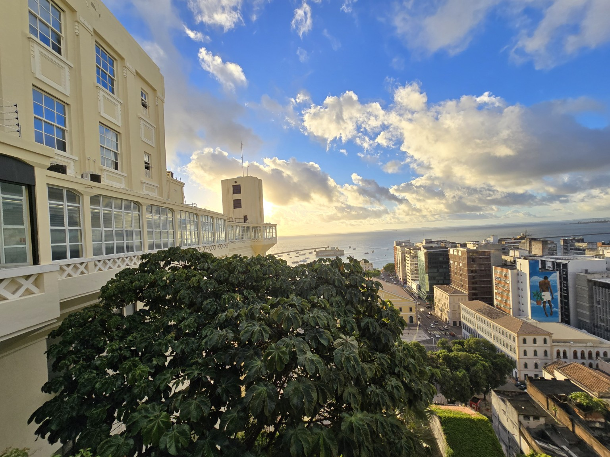
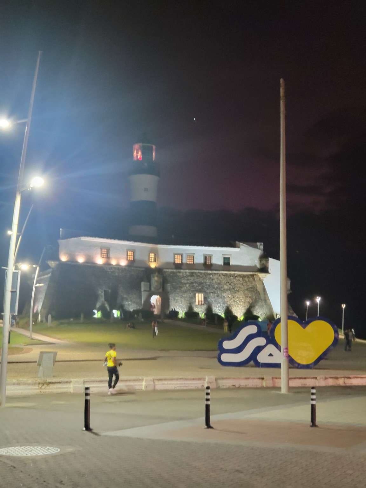
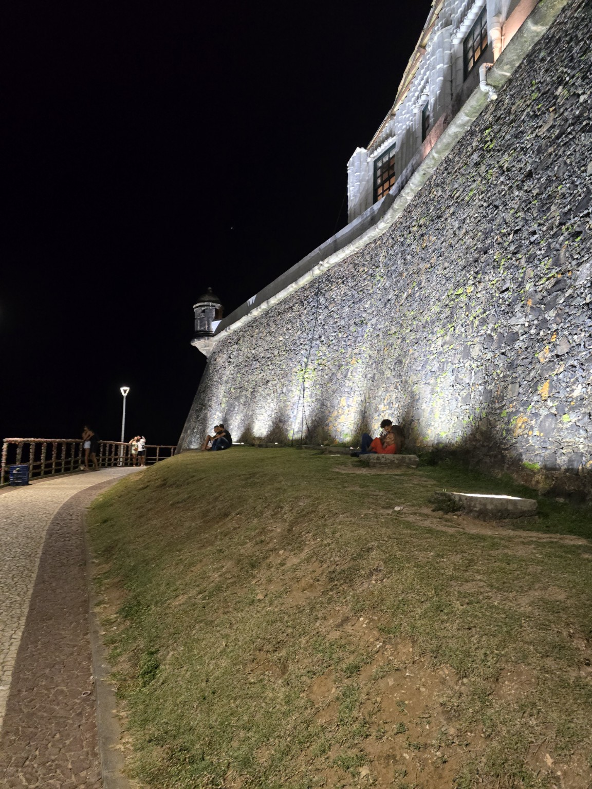

01 / YOUR HOME BASE
Praia do Forte
Live near the coast while the program unfolds over eight weeks. The town offers space to reflect, work together, and experience Bahia beyond the classroom.

A FACULTY-LED SUMMER IN BAHIA, BRAZIL
Live in Praia do Forte, discover Salvador, and design immersive experiences with Brazilian collaborators. Eight weeks to see how culture changes the way we build technology.
TWO PLACES. ONE IMMERSIVE SUMMER.
Begin with a home base in Praia do Forte. Travel into Salvador for its historic places, research and industry visits, and collaborative project work. Learn from Brazilian faculty and students as you turn observation into design.
Study abroad here is more than seeing a place. It is learning to ask better questions about it—and making technology with the people who know it.
Live near the coast while the program unfolds over eight weeks. The town offers space to reflect, work together, and experience Bahia beyond the classroom.

Encounter historic streets, music, food, and a city whose culture gives the design work its context.
EXPERIENCE THE PLACE
Culture is part of the learning, from Salvador’s historic center to music, dance, capoeira, and the coast around Praia do Forte.
Walk through Pelourinho and ask what a historic building can tell us about the place around it.
Meet Bahia through its food, gathering places, and the people and traditions behind them.
Encounter Afro-Brazilian music, dance, and capoeira as living expressions of culture.
Explore Praia do Forte and coastal experiences that connect community and environment.

A place can hold more than one story.VIRTUAL REALITY FOR SOCIAL GOOD
Students will work with Brazilian collaborators to explore the history of a building and the historic place where it stands. They will investigate whose stories are told, whose are missing, and how immersive exhibits can help people engage with difficult and important issues.
VR can be a kind of time machine: a way to encounter another moment or perspective, then return with a deeper understanding of the present.
AN IMMERSIVE INVITATION
Imagine stepping into Pelourinho to ask what its streets and buildings remember. An explorable concept environment is being prepared as a preview of the questions students will investigate in Brazil.
The planned scene is an interpretive concept, not a historical reconstruction. Students’ real work will be grounded in research and collaboration with people in Brazil.
THE ACADEMIC EXPERIENCE
Courses are taught by UF faculty. Project work connects technical practice with cultural understanding and social impact.
Study how context, identity, and collaboration shape the design of meaningful technologies.
CEN 4930 / CIS 6930Explore immersive technologies as tools for communicating stories, engaging with complex issues, and creating exhibits.
CIS 4930 / CIS 6930Developed with collaborators at SENAI CIMATEC in Salvador. The EPMR immersive photo album is an example of the kind of exhibit thinking students can explore; a hands-on demonstration is planned for the study abroad fair.
PLAN YOUR SUMMER
The fee supports a structured eight-week study abroad program, including UF courses and scheduled program experiences. Review the official brochure for current terms and the full list of inclusions and exclusions.
What is included? The UF Abroad brochure lists tuition for six credits, welcome and farewell dinners, breakfasts, accommodations as part of scheduled program excursions, program-related transportation, international health insurance, and emergency medical assistance.
Budget separately for: round-trip airfare, any applicable visa documents, personal travel and expenses, and optional trip cancellation or interruption insurance. Consult the official brochure for the full terms, housing details, and financial aid guidance.
YOUR SUMMER COULD START HERE
UF in Brazil - Cross-Cultural Engineering and Immersive Technologies for Industry 5.0
View official program & apply ↗